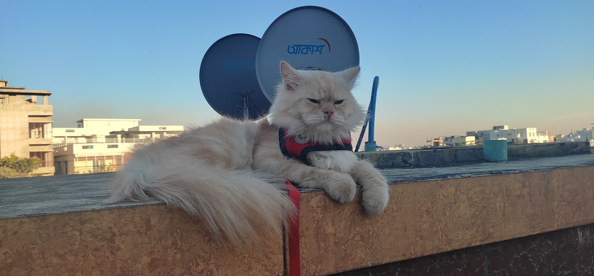

মাঝে-মাঝেই এ শহরে বিড়াল নানা বিড়ম্বনার জন্ম দেয়। উঠে বসে থাকে কোনও উঁচু বাড়ির কার্নিশে, বা পাঁচিলের প্রান্তে, বা এমন কোথাও যা দেখে আঁতকে ওঠেন এলাকাবাসী। কখনও বিড়ালটিকে বাঁচাতে তাঁরা নিজেদের মতো চেষ্টা করেন, কখনও আবার অপারগ হয়ে দমকল বা এ সংক্রান্ত বিষয়ে কাজ করা কোনও সংস্থার শরণাপন্ন হন।
সেই রকমই ঘটনা ঘটল এবার সল্টলেকের (saltlake) এ কে ব্লকে। এই ব্লকের ৬৫ নম্বর বাড়ির কার্নিশে আটকে পড়ল একটি বিড়াল। জানা গিয়েছে, এই বাড়িতে কেউ থাকেন না। প্রতিবেশীরা তখন খবর দেন স্থানীয় থানায়। খবর দেন দমকলেও। বর পেয়ে ঘটনাস্থলে এসে উপস্থিত হয় দমকল (Fire service) ও বিধান নগর পূর্ব থানার পুলিস। ঘটনাস্থলে দমকলের একটি ইঞ্জিনও আসে। প্রথমে সংশ্লিষ্ট বাড়ির দেওয়ালে মই লাগিয়ে উপরে উঠে বিড়ালটিকে উদ্ধার করার চেষ্টা করা হয়। কিন্তু লাফ দিয়ে পাশের কার্নিশে চলে যায় বিড়ালটি। অবশেষে অনেক চেষ্টায় নিরাপদেই উদ্ধার করা সম্ভব হয় বিড়ালটিকে।

বিজ্ঞানীরা বলছেন যে, গৃহে থাকা কুকুর আর বিড়ালের মধ্যে একটি পরীক্ষা করা হয়েছিল। তার মধ্যে ছিল, বাড়ির লোকেদের আচার-ব্যবহারের ধরন, মুখের অভিব্যক্তি, আবেগ, অনুভূতি প্রভৃতিতে কুকুর এবং বিড়াল উভয়েই কেমন সাড়া দেয়, তা দেখা। সেই পরীক্ষায় কুকুর এবং বিড়াল উভয়ই একইরকমভাবে সাড়া দিয়েছে। তাই এই পরীক্ষা আমাদের বিশ্বাস করতে সাহায্য করবে যে, মানুষের আচার ব্যবহার এবং হাব-ভাবে কুকুর যেমন সাড়া দেয়, তেমনই অনেকটাই বিড়ালও সাড়া দেয়। তবে কুকুরের সমান বুদ্ধি বিড়ালের কিছু ক্ষেত্রে একরকম। কিন্তু সব দিক থেকে দেখলে বিড়ালের থেকে অনেক বেশি বুদ্ধিমান এবং অনেক বেশি মানুষের কথা বুঝতে পারে কুকুর।